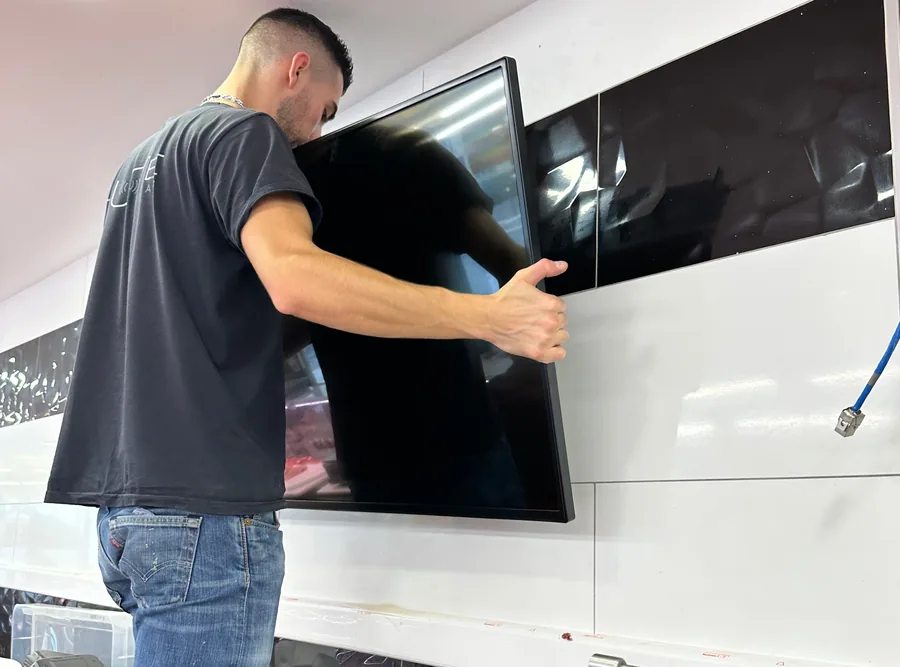

Publié le 13 septembre 2026
Soleil, tramontane et sel : ce qu'un écran doit supporter ici
Les Pyrénées-Orientales comptent parmi les départements les plus ensoleillés et les plus ventés de France. Ce n'est pas un argument touristique quand on installe du matériel en façade : c'est une contrainte technique.

Le soleil, et pourquoi la luminosité n'est pas un argument marketing
Perpignan compte parmi les villes les plus ensoleillées de France métropolitaine. Pour une vitrine, cela signifie une chose très concrète : pendant une grande partie de l'année, la lumière extérieure est massivement plus forte que celle qu'un écran ordinaire peut produire.
Le résultat est visible dans n'importe quelle rue commerçante : des écrans installés derrière une vitre sur lesquels on ne voit que le reflet de la rue d'en face. L'appareil fonctionne parfaitement, il affiche exactement ce qu'on lui demande, et personne ne le lit.
C'est la raison d'être des écrans dits haute luminosité, jusqu'à 4000 cd/m², contre environ 300 pour un téléviseur grand public. Ce n'est pas une surenchère commerciale : c'est le seuil en dessous duquel l'écran ne sert à rien derrière une vitre exposée. Et dans ce département, la plupart des devantures le sont.
La chaleur derrière la vitre, le vrai tueur de matériel
C'est le point que presque personne n'anticipe, et c'est celui qui provoque le plus de pannes.
Entre une vitrine plein sud et un écran posé juste derrière, il se crée un petit volume d'air confiné qui monte très haut en température l'après-midi. Un appareil grand public y atteint rapidement sa limite : il se met en sécurité, s'éteint, ou tombe en panne définitivement. Cela arrive typiquement au premier mois de juillet, c'est-à-dire au pire moment pour un commerce.
Un écran professionnel de vitrine est conçu pour cet usage, avec une gestion thermique dédiée et une plage de fonctionnement bien plus large. C'est une bonne partie de ce que vous payez dans l'écart de prix entre un téléviseur et lui.
La tramontane, et le dimensionnement des ancrages
Le vent est ici une contrainte de calcul, pas une anecdote. La tramontane souffle plusieurs dizaines de jours par an, avec des rafales largement au-dessus de cent kilomètres-heure sur la plaine et le littoral.
Concrètement, cela change trois choses :
- Le stop-trottoir doit être lesté, et il doit surtout être rentré les jours de vent. Un chevalet léger sur un trottoir de bord de mer un jour de tramontane devient un projectile.
- Le totem doit être lesté ou fixé au sol selon l'exposition. Sur un quai ou une entrée de village dégagée, ce n'est pas la même base que dans un hall.
- Le panneau en façade se dimensionne avec le vent comme donnée d'entrée, pas comme correctif après coup.
C'est le genre de point qu'un fournisseur qui ne vient jamais sur place ne peut pas traiter, parce qu'il ne sait pas si votre façade est abritée par le bâti ou exposée plein nord-ouest sur une plaine dégagée.
L'air salin, sur toute la frange littorale
De Leucate au Barcarès, de Canet à Argelès, de Port-Vendres à Collioure, l'air chargé de sel attaque les métaux, les connectiques et les joints. Ce n'est pas propre à l'affichage : tous les commerces du littoral le savent pour leurs stores, leurs enseignes et leurs fermetures.
Derrière une vitrine fermée, un écran ne voit pas d'embruns et la question ne se pose pas. En extérieur exposé, elle devient centrale : il faut un boîtier prévu pour, certifié IP55, avec une plage de fonctionnement de −30 °C à +50 °C.
Sur un emplacement directement face au large, nous regardons l'exposition réelle avant de nous engager. S'il n'existe pas d'implantation que le matériel tiendra dans la durée, nous préférons le dire que de revenir pour une panne dix-huit mois plus tard.
Et l'hiver, tant qu'on y est
On l'oublie parce que la réputation du département est au soleil, mais l'arrière-pays descend bien en dessous de zéro. Le Conflent, le Capcir, la Cerdagne, les villages d'altitude : ce ne sont pas les mêmes conditions que la plaine, et un matériel extérieur doit encaisser les deux extrêmes dans la même année.
C'est pourquoi la plage annoncée va de −30 °C à +50 °C. Ce n'est pas une fiche technique décorative : dans ce département, on utilise les deux bouts.
Ce que cela change à la manière de travailler
La conclusion pratique tient en une phrase : ici, le repérage n'est pas une formalité commerciale, c'est l'étape technique qui détermine le matériel.
Orientation de la vitrine, heures d'exposition directe, protection par le bâti, exposition au vent dominant, distance à la mer, ventilation possible derrière l'écran. Six points qui se constatent sur place en vingt minutes et qui décident de tout le reste. Un prestataire qui vend le même écran à Perpignan et à Lille se trompe sur l'un des deux.
En résumé
La tramontane peut-elle arracher un dispositif ?
Elle a déjà fait mieux. Un panneau, un totem ou un stop-trottoir doit être lesté ou ancré en conséquence, et c'est un point de dimensionnement, pas un détail de pose. Un chevalet léger posé sur un trottoir de bord de mer un jour de tramontane finit dans la rue — c'est la première chose que nous regardons au repérage.
Un écran résiste-t-il à l'air salin ?
En vitrine fermée, il ne voit pas d'embruns et la question ne se pose pas. En extérieur exposé, il faut un matériel prévu pour cela : nos boîtiers extérieurs sont certifiés IP55 et fonctionnent de −30 °C à +50 °C. Sur un front de mer ou un ponton, nous regardons l'exposition réelle avant de nous engager plutôt qu'après.
Le soleil peut-il abîmer la dalle ?
Une exposition directe prolongée est une contrainte sévère pour tout écran, et c'est précisément ce qui distingue un matériel professionnel d'un téléviseur grand public. Le point de rupture le plus fréquent n'est d'ailleurs pas la lumière mais la chaleur accumulée entre la vitre et l'appareil, qui provoque une mise en sécurité ou une panne — en général au premier été.
À lire aussi
Les articles et les pages qui complètent celui-ci.
Le repérage décide, pas le catalogue
Nous venons voir l'exposition réelle. S'il n'existe pas d'implantation tenable, nous le disons.
Demandez votre étude gratuite
Dites-nous l'orientation de votre vitrine et votre exposition au vent : ces deux points changent le matériel proposé.
- Réponse sous 48 heures
- Nous venons voir votre devanture sur place
- Simulation de votre vitrine, sans engagement